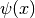
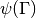

BasisTransformationWF¶
About the BasisTransformationWF class¶
The WaveBlocks Project
@author: R. Bourquin @copyright: Copyright (C) 2010, 2011, 2012, 2013, 2014, 2015, 2016 R. Bourquin @license: Modified BSD License
Inheritance diagram¶

Class documentation¶
-
class
WaveBlocksND.BasisTransformationWF(potential, grid=None)[source]¶ This class implements basis transformations of wavefunctions  between the canonical basis of and the basis
 spanned
by the eigenvectors
spanned
by the eigenvectors  of the potential
of the potential  .
.-
__init__(potential, grid=None)[source]¶ Create a new
BasisTransformationinstance for a given potential matrix.Parameters: - potential (A
MatrixPotentialinstance.) – The potential underlying the basis transformation. - grid (A
Gridsubclass instance.) – The grid.
- potential (A
-
set_grid(grid)[source]¶ Set the grid
 containing the nodes
containing the nodes  on
which the wavefunction
on
which the wavefunction  was evaluated. The
was evaluated. The  eigenvectors
eigenvectors
 will be evaluated on the same grid nodes.
will be evaluated on the same grid nodes.Parameters: grid (A Gridsubclass instance.) – The grid
-
transform_to_canonical(wavefunction)[source]¶ Transform the evaluated wavefunction  given in the eigenbasis to the canonical basis.
Parameters: wavefunction (A WaveFunctioninstance.) – The wavefunction to transform.Returns: Another WaveFunctioninstance containing the transformed wavefunction .
.
-
transform_to_eigen(wavefunction)[source]¶ Transform the evaluated wavefunction
given
in the canonical basis to the eigenbasis.Parameters: wavefunction (A WaveFunctioninstance.) – The wavefunction to transform.Returns: Another WaveFunctioninstance containing the transformed wavefunction .
-